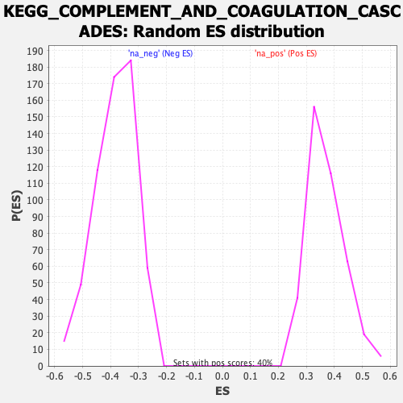

| | | Dataset | prerank |
| Phenotype | NoPhenotypeAvailable |
| Upregulated in class | na_pos |
| GeneSet | KEGG_COMPLEMENT_AND_COAGULATION_CASCADES |
| Enrichment Score (ES) | 0.7616669 |
| Normalized Enrichment Score (NES) | 2.0603585 |
| Nominal p-value | 0.0 |
| FDR q-value | 0.0 |
| FWER p-Value | 0.0 |
Table: GSEA Results Summary
 Fig 1: Enrichment plot: KEGG_COMPLEMENT_AND_COAGULATION_CASCADES
Fig 1: Enrichment plot: KEGG_COMPLEMENT_AND_COAGULATION_CASCADES
Profile of the Running ES Score & Positions of GeneSet Members on the Rank Ordered List
| SYMBOL | RANK IN GENE LIST | RANK METRIC SCORE | RUNNING ES | CORE ENRICHMENT | | 1 | CFD | 3 | 7.064 | 0.1610 | Yes |
| 2 | C1QB | 92 | 3.462 | 0.2383 | Yes |
| 3 | C1QC | 186 | 2.778 | 0.3000 | Yes |
| 4 | C1QA | 199 | 2.711 | 0.3616 | Yes |
| 5 | C4BPA | 242 | 2.572 | 0.4194 | Yes |
| 6 | F13A1 | 660 | 1.759 | 0.4518 | Yes |
| 7 | SERPINA1 | 870 | 1.561 | 0.4834 | Yes |
| 8 | C9 | 1531 | 1.164 | 0.4977 | Yes |
| 9 | CD59 | 1623 | 1.124 | 0.5216 | Yes |
| 10 | BDKRB1 | 1872 | 1.039 | 0.5407 | Yes |
| 11 | CFH | 1886 | 1.037 | 0.5641 | Yes |
| 12 | FGB | 2007 | 1.002 | 0.5847 | Yes |
| 13 | SERPING1 | 2594 | 0.860 | 0.5933 | Yes |
| 14 | C5AR1 | 2826 | 0.814 | 0.6076 | Yes |
| 15 | F12 | 2959 | 0.785 | 0.6230 | Yes |
| 16 | CFI | 3215 | 0.737 | 0.6351 | Yes |
| 17 | BDKRB2 | 3295 | 0.725 | 0.6501 | Yes |
| 18 | C3AR1 | 3299 | 0.724 | 0.6666 | Yes |
| 19 | SERPINE1 | 3466 | 0.700 | 0.6794 | Yes |
| 20 | C1S | 4058 | 0.619 | 0.6825 | Yes |
| 21 | C1R | 4142 | 0.608 | 0.6948 | Yes |
| 22 | VWF | 4421 | 0.574 | 0.7027 | Yes |
| 23 | PLAU | 4456 | 0.571 | 0.7151 | Yes |
| 24 | TFPI | 4514 | 0.564 | 0.7269 | Yes |
| 25 | C4BPB | 5287 | 0.485 | 0.7236 | Yes |
| 26 | F8 | 5355 | 0.479 | 0.7333 | Yes |
| 27 | PLAT | 5584 | 0.459 | 0.7395 | Yes |
| 28 | A2M | 5788 | 0.444 | 0.7458 | Yes |
| 29 | F2 | 5896 | 0.435 | 0.7537 | Yes |
| 30 | THBD | 5992 | 0.426 | 0.7617 | Yes |
| 31 | PLG | 6970 | 0.347 | 0.7514 | No |
| 32 | F2R | 7980 | 0.292 | 0.7392 | No |
| 33 | F10 | 8471 | 0.261 | 0.7360 | No |
| 34 | F13B | 9140 | 0.231 | 0.7288 | No |
| 35 | FGA | 9327 | 0.220 | 0.7304 | No |
| 36 | MBL2 | 10177 | 0.212 | 0.7194 | No |
| 37 | C2 | 10702 | 0.193 | 0.7140 | No |
| 38 | CR1 | 11374 | 0.160 | 0.7051 | No |
| 39 | C8G | 11380 | 0.159 | 0.7086 | No |
| 40 | C3 | 11933 | 0.133 | 0.7014 | No |
| 41 | KLKB1 | 12666 | 0.125 | 0.6906 | No |
| 42 | F3 | 12841 | 0.117 | 0.6900 | No |
| 43 | F11 | 12949 | 0.111 | 0.6905 | No |
| 44 | CFB | 13196 | 0.101 | 0.6882 | No |
| 45 | PROC | 13392 | 0.094 | 0.6867 | No |
| 46 | FGG | 13565 | 0.087 | 0.6855 | No |
| 47 | CD46 | 13768 | 0.078 | 0.6835 | No |
| 48 | PROS1 | 13840 | 0.075 | 0.6839 | No |
| 49 | C8B | 16727 | 0.051 | 0.6312 | No |
| 50 | SERPINC1 | 18037 | 0.009 | 0.6070 | No |
| 51 | C6 | 18121 | 0.006 | 0.6056 | No |
| 52 | MASP2 | 18329 | 0.000 | 0.6017 | No |
| 53 | SERPIND1 | 18420 | 0.000 | 0.6000 | No |
| 54 | F9 | 18448 | 0.000 | 0.5995 | No |
| 55 | C7 | 18526 | 0.000 | 0.5981 | No |
| 56 | CR2 | 18557 | 0.000 | 0.5975 | No |
| 57 | MASP1 | 18652 | 0.000 | 0.5958 | No |
| 58 | SERPINA5 | 19761 | 0.000 | 0.5751 | No |
| 59 | F5 | 19946 | 0.000 | 0.5716 | No |
| 60 | C4B | 22400 | 0.000 | 0.5259 | No |
| 61 | C4A | 26552 | 0.000 | 0.4484 | No |
| 62 | C8A | 34974 | -0.016 | 0.2916 | No |
| 63 | C5 | 36143 | -0.032 | 0.2706 | No |
| 64 | SERPINF2 | 40526 | -0.192 | 0.1932 | No |
| 65 | CD55 | 41694 | -0.231 | 0.1767 | No |
| 66 | F7 | 44208 | -0.345 | 0.1376 | No |
| 67 | PLAUR | 44506 | -0.361 | 0.1403 | No |
| 68 | KNG1 | 45448 | -0.418 | 0.1323 | No |
| 69 | CPB2 | 50716 | -0.913 | 0.0549 | No |
Table: GSEA details [plain text format]

Fig 2: KEGG_COMPLEMENT_AND_COAGULATION_CASCADES: Random ES distribution
Gene set null distribution of ES for KEGG_COMPLEMENT_AND_COAGULATION_CASCADES